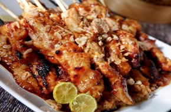

< < Daftar resep
bahan |
cara memasak

Sate Madura
Sate Madura adalah Olahan daging yang ditusuk lalu dibakar dengan bumbu khas cita rasa Madura sate ini banyak dijual di
seluruh Nusantara, Sate Madura dapat ditemukan hampir di semua
daerah khususnya di kota besar seperti Medan, Jakarta,
Bandung, dan Surabaya.
Bahan-bahan:
- Daging Sapi Fillet.
- 1 sdt garam.
- 2 sdm kecap manis.
- perasan air lemon/jeruk limau.
- kacang tanah 300 gram, goreng/sangrai.
- bawang putih 6 siung & Bawang Merah 8 Siung.
- cabai merah 4 buah.
- daun jeruk 3 lembar.
- kecap manis 100 ml.
- lontong atau ketupat.
- bawang goreng.
- sambal Sesuai Selera.
Cara Membuat:
- Potong Daging Sapi bentuk dadu, beri garam dan perasan jeruk lemon dan kecap manis, simpan dikulkas minimal 1 jam,
Lalu tusuk-tusuk dengan tusuk sate dan lakukan hingga habis, sisihkan
- Haluskan semua bahan bumbu kacang, kecuali kecap, daun jeruk.
- Lalu masukkan kecap, air, daun jeruk dan masak dengan api kecil hingga air surut dan mengeluarkan minyak.
- Siapkan bakaran/ panggangan. Lumuri sate ayam dengan bumbu kacang dan sedikit kecap manis.
- Bakar sate hingga matang sambil dibolak-balik.
- Sajikan sate dengan bumbu kacang, jeruk limau, kecap manis dan lontong dan pelengkap lainnya.
kembali keatas
< < Daftar resep